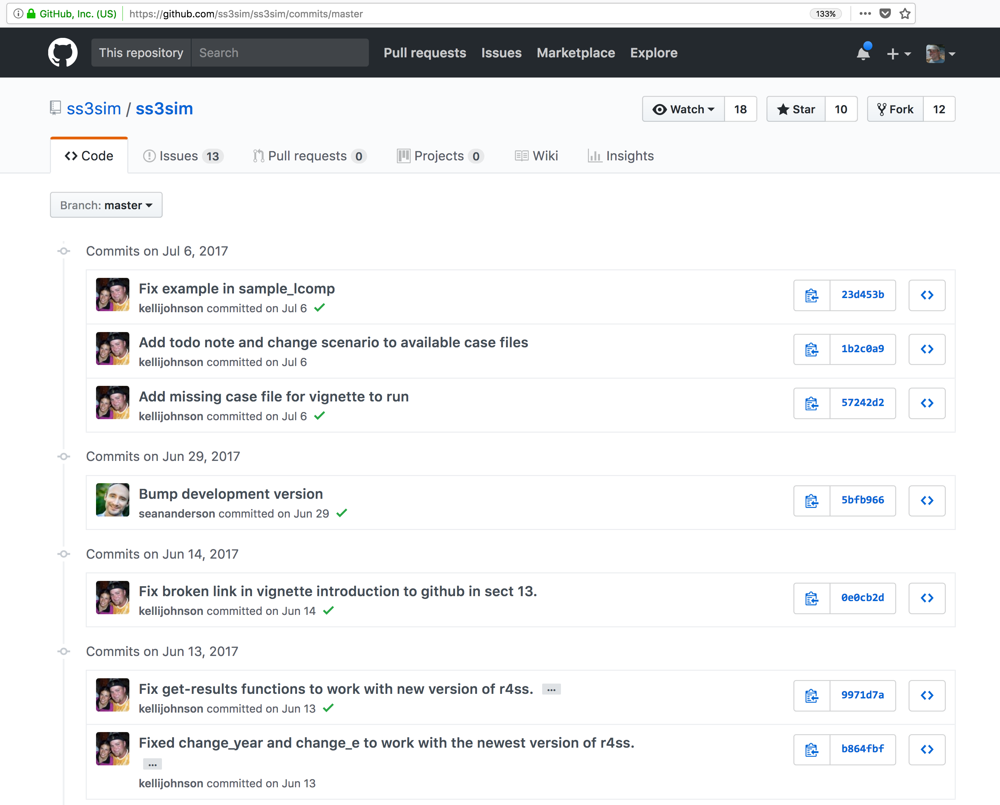
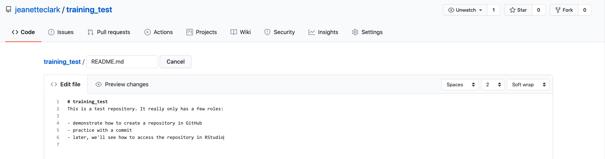
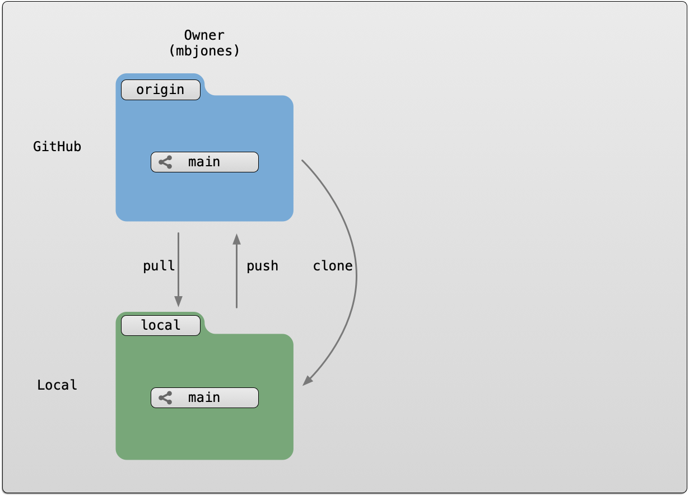
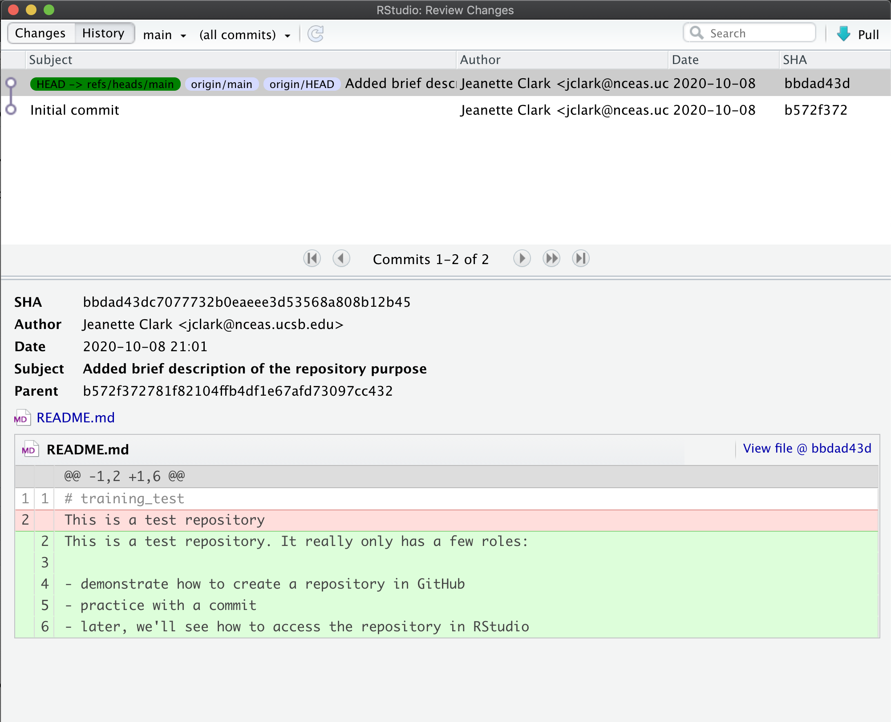
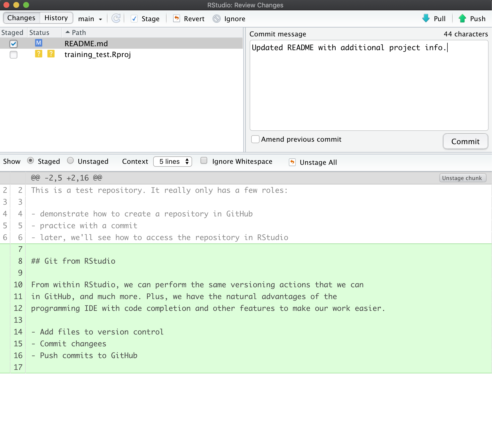
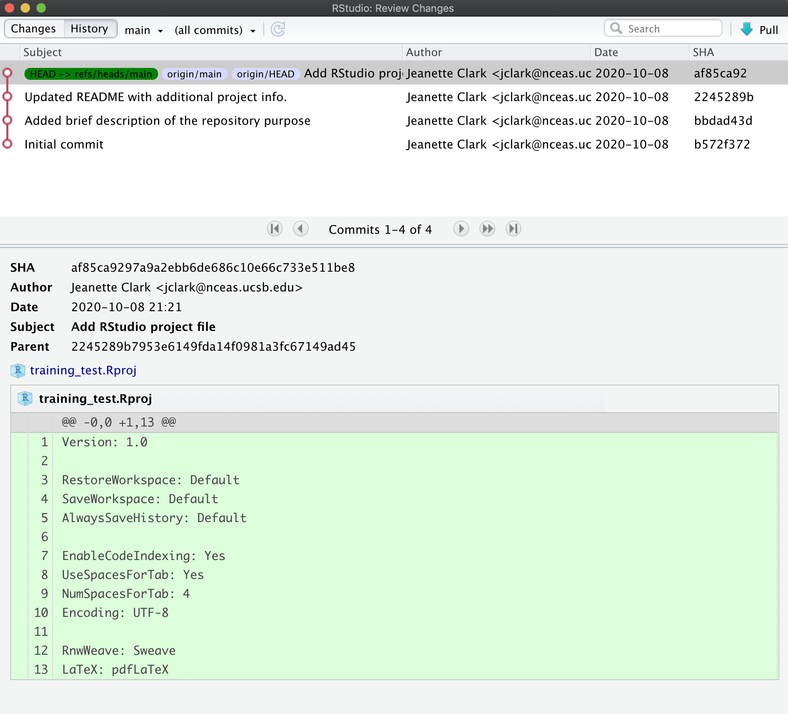
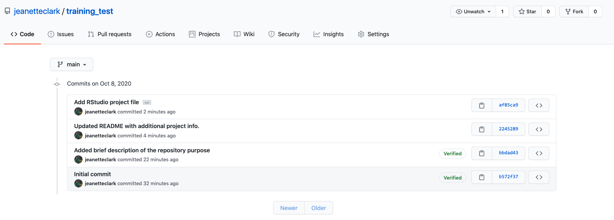
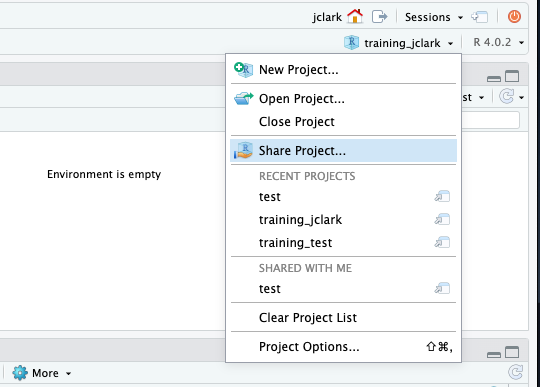
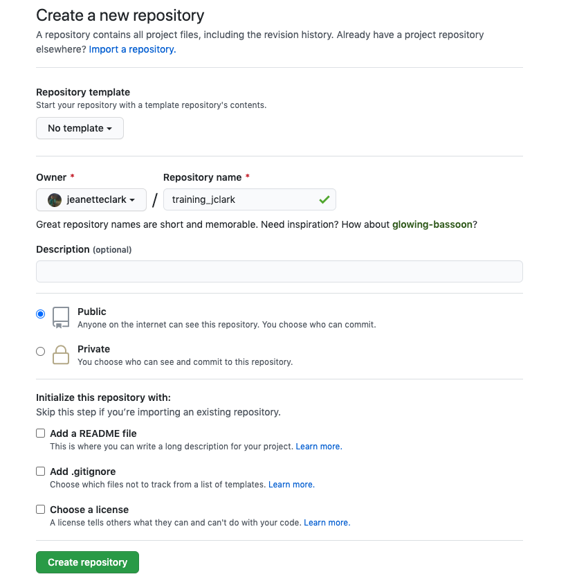

4 Session 4: Version Control with git and GitHub
4.1 Learning Objectives
In this lesson, you will learn:
- Why git is useful for reproducible analysis
- How to use git to track changes to your work over time
- How to use GitHub to collaborate with others
- How to structure your commits so your changes are clear to others
- How to write effective commit messages
4.2 Introduction to git

Every file in the scientific process changes. Manuscripts are edited.
Figures get revised. Code gets fixed when problems are discovered. Data files
get combined together, then errors are fixed, and then they are split and
combined again. In the course of a single analysis, one can expect thousands of
changes to files. And yet, all we use to track this are simplistic filenames.
You might think there is a better way, and you’d be right: version control.
Version control systems help you track all of the changes to your files, without
the spaghetti mess that ensues from simple file renaming. In version control systems
like git, the system tracks not just the name of the file, but also its contents,
so that when contents change, it can tell you which pieces went where. It tracks
which version of a file a new version came from. So its easy to draw a graph
showing all of the versions of a file, like this one:

Version control systems assign an identifier to every version of every file, and
track their relationships. They also allow branches in those versions, and merging
those branches back into the main line of work. They also support having
multiple copies on multiple computers for backup, and for collaboration.
And finally, they let you tag particular versions, such that it is easy to return
to a set of files exactly as they were when you tagged them. For example, the
exact versions of data, code, and narrative that were used when a manuscript was originally
submitted might be eco-ms-1 in the graph above, and then when it was revised and resubmitted,
it was done with tag eco-ms-2. A different paper was started and submitted with tag dens-ms-1, showing that you can be working on multiple manuscripts with closely related but not identical sets of code and data being used for each, and keep track of it all.
Version control and Collaboration using Git and GitHub
First, just what are git and GitHub?
- git: version control software used to track files in a folder (a repository)
- git creates the versioned history of a repository
- GitHub: web site that allows users to store their git repositories and share them with others

Let’s look at a GitHub repository
This screen shows the copy of a repository stored on GitHub, with its list of files, when the files and directories were last modified, and some information on who made the most recent changes.
 If we drill into the
“commits” for the repository, we can see the history of changes made to all of
the files. Looks like
If we drill into the
“commits” for the repository, we can see the history of changes made to all of
the files. Looks like kellijohnson and seananderson were fixing things in
June and July:

And finally, if we drill into the changes made on June 13, we can see exactly what was changed in each file:
 Tracking these changes, how they relate to released versions of software and files
is exactly what Git and GitHub are good for. And we will show how they can really
be effective for tracking versions of scientific code, figures, and manuscripts
to accomplish a reproducible workflow.
Tracking these changes, how they relate to released versions of software and files
is exactly what Git and GitHub are good for. And we will show how they can really
be effective for tracking versions of scientific code, figures, and manuscripts
to accomplish a reproducible workflow.
The Git lifecycle
As a git user, you’ll need to understand the basic concepts associated with versioned sets of changes, and how they are stored and moved across repositories. Any given git repository can be cloned so that it exist both locally, and remotely. But each of these cloned repositories is simply a copy of all of the files and change history for those files, stored in git’s particular format. For our purposes, we can consider a git repository just a folder with a bunch of additional version-related metadata.
In a local git-enabled folder, the folder contains a workspace containing the current version of all files in the repository. These working files are linked to a hidden folder containing the ‘Local repository’, which contains all of the other changes made to the files, along with the version metadata.
So, when working with files using git, you can use git commands to indicate specifically
which changes to the local working files should be staged for versioning
(using the git add command), and when to record those changes as a version in
the local repository (using the command git commit).
The remaining concepts are involved in synchronizing the changes in your local
repository with changes in a remote repository. The git push command is used to
send local changes up to a remote repository (possibly on GitHub), and the git pull
command is used to fetch changes from a remote repository and merge them into the
local repository.

git clone: to copy a whole remote repository to localgit add(stage): notify git to track particular changesgit commit: store those changes as a versiongit pull: merge changes from a remote repository to our local repositorygit push: copy changes from our local repository to a remote repositorygit status: determine the state of all files in the local repositorygit log: print the history of changes in a repository
Those seven commands are the majority of what you need to successfully use git.
But this is all super abstract, so let’s explore with some real examples.
4.3 Create a remote repository on GitHub
Let’s start by creating a repository on GitHub, then we’ll edit some files.
Setup
- Log into GitHub
- Click the New repository button
- Name it
training-test - Create a README.md
- Set the LICENSE to Apache 2.0
- Add a .gitignore file for
R
If you were successful, it should look something like this:

You’ve now created your first repository! It has a couple of files that GitHub created for you, like the README.md file, and the LICENSE file, and the .gitignore file.

For simple changes to text files, you can make edits right in the GitHub web interface.
Challenge
Navigate to the README.md file in the file listing, and edit it by clicking on the pencil icon.
This is a regular Markdown file, so you can just add markdown text. When done, add a commit message, and
hit the Commit changes button.

Congratulations, you’ve now authored your first versioned commit. If you navigate back to the GitHub page for the repository, you’ll see your commit listed there, as well as the rendered README.md file.

Let’s point out a few things about this window. It represents a view of the repository that you created, showing all of the files in the repository so far. For each file, it shows when the file was last modified, and the commit message that was used to last change each file. This is why it is important to write good, descriptive commit messages. In addition, the blue header above the file listing shows the most recent commit, along with its commit message, and its SHA identifier. That SHA identifier is the key to this set of versioned changes. If you click on the SHA identifier (810f314), it will display the set of changes made in that particular commit.
In the next section we’ll use the GitHub URL for the GitHub repository you created
to clone the repository onto your local machine so that you can edit the files
in RStudio. To do so, start by copying the GitHub URL, which represents the repository
location:

4.4 Working locally with Git via RStudio
For convenience, it would be nice to be able to edit the files locally on our
computer using RStudio rather than working on the GitHub website. We can do this
by using the clone command to copy the repository from GitHub to our local computer,
which then allows us to push changes up to GitHub and pull down any changes that
have occurred.

We refer to the remote copy of the repository that is on GitHub as the origin
repository (the one that we cloned from), and the copy on our local computer as
the local copy.
RStudio knows how to work with files under version control with Git, but only if you are working within an RStudio project folder. In this next section, we will clone the repository that you created on GitHub into a local repository as an RStudio project. Here’s what we’re going to do:
- Create the new project
- Inspect the Git tab and version history
- Commit a change to the README.md file
- Commit the changes that RStudio made
- Inspect the version history
- Add and commit an Rmd file
- Push these changes to GitHub
- View the change history on GitHub
Setup
In the File menu, select “New Project.” In the dialog that pops up, select the “Version Control” option, and paste the GitHub URL that you copied into the field for the remote repository Repository URL. While you can name the local copy of the repository anything, it’s typical to use the same name as the GitHub repository to maintain the correspondence.

Once you hit `Create Project, a new RStudio window will open with all of the files from the remote repository copied locally. Depending on how your version of RStudio is configured, the location and size of the panes may differ, but they should all be present, including a Git tab and the normal Files tab listing the files that had been created in the remote repository.

You’ll note that there is one new file training-test.Rproj, and three files that we
created earlier on GitHub (.gitignore, LICENSE, and README.md).
In the Git tab, you’ll note that two files are listed. This is the status pane
that shows the current modification status of all of the files in the repository.
In this case, the .gitignore file is listed as M for Modified, and training-test.Rproj
is listed with a ? ? to indicate that the file is untracked. This means that
git has not stored any versions of this file, and knows nothing about the file.
As you make version control decisions in RStudio, these icons will change to reflect
the current version status of each of the files.
Inspect the history. For now, let’s click on the History button in the Git tab, which will show the log of changes that occurred, and will be identical to what we viewed on GitHub. By clicking on each row of the history, you can see exactly what was added and changed in each of the two commits in this repository.

Challenge
Commit a README.md change. Next let’s make a change to the README.md file, this time from RStudio.
Add a new section to your markdown using a header, and under it include a list three advantages to using git.
Once you save, you’ll immediately see the README.md file show up in the Git tab, marked as a modification. You can select the file in the Git tab, and click Diff to see the differences that you saved (but which are not yet committed to your local repository).

And here’s what the newly made changes look like compared to the original file. New lines are highlighted in green, while removed lines are in red.
 Commit the RStudio changes.
Commit the RStudio changes.
To commit the changes you made to the README.md file, check the Staged checkbox next to the file (which tells Git which changes you want included in the commit), then provide a descriptive Commit message, and then click Commit.

Note that some of the changes in the repository, namely training-test.Rproj are still listed as having not been committed. This means
there are still pending changes to the repository. You can also see the note
that says:
Your branch is ahead of ‘origin/main’ by 1 commit.
This means that we have committed 1 change in the local repository, but that
commit has not yet been pushed up to the origin repository, where origin
is the typical name for our remote repository on GitHub. So, let’s commit the
remaining project files by staging them and adding a commit message.

When finished, you’ll see that no changes remain in the Git tab, and the repository is clean.
Inspect the history. Note that the message now says:
Your branch is ahead of ‘origin/main’ by 2 commits.
These 2 commits are the two we just made, and have not yet been pushed to GitHub. By clicking on the History button, we can see that there are now a total of four commits in the local repository (while there had only been two on GitHub).

Push these changes to GitHub. Now that everything has been changed as desired locally, you can push the changes to GitHub using the Push button. This will prompt you for your GitHub username and password, and upload the changes, leaving your repository in a totally clean and synchronized state. When finished, looking at the history shows all four commits, including the two that were done on GitHub and the two that were done locally on RStudio.

And note that the labels indicate that both the local repository (HEAD) and the
remote repository (origin/HEAD) are pointing at the same version in the history.
So, if we go look at the commit history on GitHub, all the commits will be shown
there as well.

Aside
What should I write in my commit message?
Clearly, good documentation of what you’ve done is critical to making the version history of your repository meaningful and helpful. Its tempting to skip the commit message altogether, or to add some stock blurb like ‘Updates’. It’s better to use messages that will be helpful to your future self in deducing not just what you did, but why you did it. Also, commit messaged are best understood if they follow the active verb convention. For example, you can see that my commit messages all started with a past tense verb, and then explained what was changed.
While some of the changes we illustrated here were simple and so easily explained in a short phrase, for more complex changes, its best to provide a more complete message. The convention, however, is to always have a short, terse first sentence, followed by a more verbose explanation of the details and rationale for the change. This keeps the high level details readable in the version log. I can’t count the number of times I’ve looked at the commit log from 2, 3, or 10 years prior and been so grateful for diligence of my past self and collaborators.
Collaboration and conflict free workflows
Up to now, we have been focused on using Git and GitHub for yourself, which is a great use. But equally powerful is to share a GitHub repository with other researchers so that you can work on code, analyses, and models together. When working together, you will need to pay careful attention to the state of the remote repository to avoid and handle merge conflicts. A merge conflict occurs when two collaborators make two separate commits that change the same lines of the same file. When this happens, git can’t merge the changes together automatically, and will give you back an error asking you to resolve the conflict. Don’t be afraid of merge conflicts, they are pretty easy to handle. and there are some great guides.
That said, its truly painless if you can avoid merge conflicts in the first place. You can minimize conflicts by:
- Ensure that you pull down changes just before you commit
- Ensures that you have the most recent changes
- But you may have to fix your code if conflict would have occurred
- Coordinate with your collaborators on who is touching which files
- You still need to communicate to collaborate
4.5 Setting up git on an existing project
Now you have two projects set up in your RStudio environment, training_{USERNAME} and training_test. We set you up with the training_test project since we think it is an easy way to introduce you to git, but more commonly researchers will have an existing directory of code that they then want to make a git repository out of. For the last exercise of this session, we will do this with your training_{USERNAME} project.
First, switch to your training_{USERNAME} project using the RStudio project switcher. The project switcher is in the upper right corner of your RStudio pane. Click the dropdown next to your project name (training_test), and then select the training_{USERNAME} project from the “recent projects” list.

Next, from the Tools menu, select “Project Options.” In the dialog that pops up, select “Git/SVN” from the menu on the left. In the dropdown at the top of this page, select “Git” and click “Yes” in the confirmation box. Click “Yes” again to restart RStudio.
When RStudio restarts, you should have a git tab, with two untracked files (.gitignore and training_{USERNAME}.Rproj).
Challenge
Add and commit these two files to your git repository
Now we have your local repository all set up. You can make as many commits as you want on this repository, and it will likely still be helpful to you, but the power in git and GitHub is really in collaboration. As discussed, GitHub facilitates this, so let’s get this repository on GitHub.
Go back to GitHub, and click on the “New Repository” button.
In the repository name field, enter the same name as your RProject. So for me, this would be training_jclark. Add a description, keep the repository public, and, most importantly:
DO NOT INITIALIZE THE REPOSITORY WITH ANY FILES.
We already have the repository set up locally so we don’t need to do this. Initializing the repository will only cause merge issues.
Here is what your page should look like: 
Once your page looks like that, click the “create repository” button.
This will open your empty repository with a page that conveniently gives you exactly the instructions you need. In our case, we are “pushing an existing repository from the command line.”

Click the clipboard icon to copy the code for the middle option of the three on this page. It should have three lines and look like this:
git remote add origin https://github.com/jeanetteclark/training_jclark.git
git branch -M main
git push -u origin mainBack in RStudio, open the terminal by clicking the tab labeled as such next to the console tab. The prompt should look something like this:
jclark@included-crab:~/training_jclark$In the prompt, paste the code that you copied from the GitHub page and press return. You will be prompted to type your GitHub username and password.
The code that you copied and pasted did three things:
- added the GitHub repository as the remote repository
- renamed the default branch to
main - pushed the
mainbranch to the remote GitHub repository
If you go back to your browser and refresh your GitHub repository page, you should now see your files appear.
Challenge
On your repository page, GitHub has a button that will help you add a readme file. Click the “Add a README” button and use markdown syntax to create a simple readme. Commit the changes to your repository.
Go to your local repository (in RStudio) and pull the changes you made.
4.6 Go Further
There’s a lot we haven’t covered in this brief tutorial. There are some great and much longer tutorials that cover advanced topics, such as:
Using git on the command line
Resolving conflicts
Branching and merging
Pull requests versus direct contributions for collaboration
Using .gitignore to protect sensitive data
GitHub Issues and why they are useful
and much, much more
Try Git is a great interactive tutorial
Software Carpentry Version Control with Git
Codecademy Learn Git (some paid)